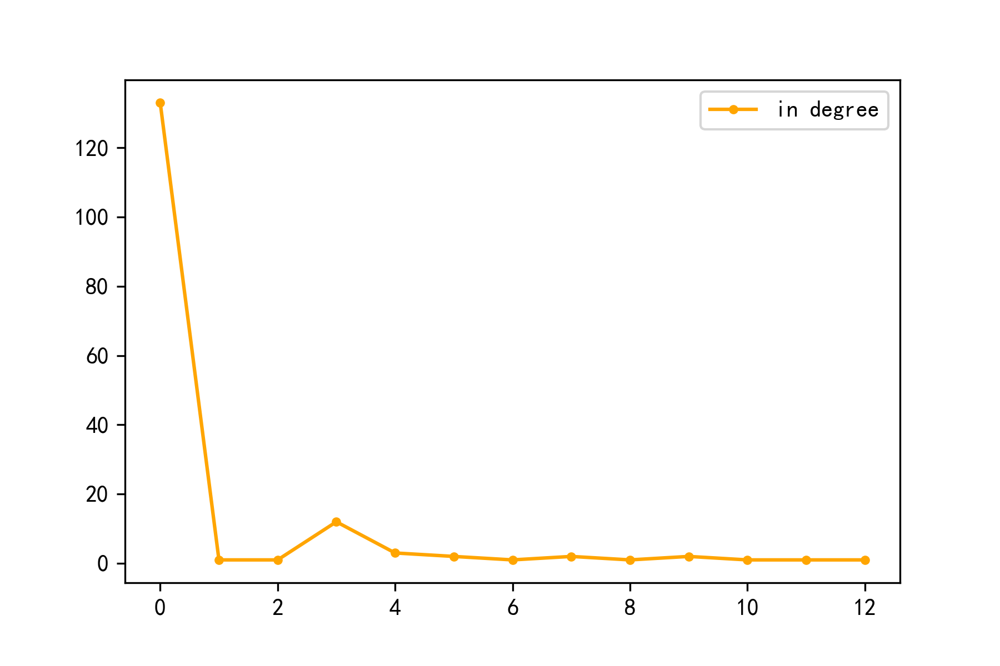
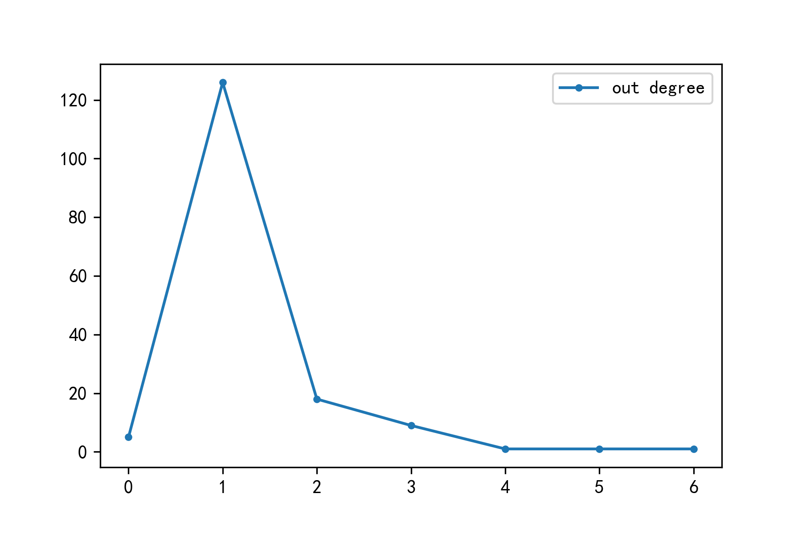

| # | 名称 | 出度 | 入度 | PageRank | Centraliity |
|---|---|---|---|---|---|
| {{ n.id }} | {{n.name}} | {{ n.outdegree }} | {{ n.indegree }} | {{ n.pagerank }} | {{ n.centrality }} |
节点入度统计图
节点出度统计图
| 极大值 | 名称 | 出度 | 入度 | PageRank | Centraliity |
|---|---|---|---|---|---|
| Pagerank | 要闻栏目 | 0 | 5 | 0.08902 | 0.03125 |
| Centrality | 医疗体制改革 | 2 | 15 | 0.04848 | 0.10625 |
| Centrality | 民生保障 | 1 | 16 | 0.02985 | 0.10625 |